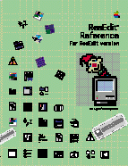

Legacy Document
Important: The information in this document is obsolete and should not be used for new development.
Important: The information in this document is obsolete and should not be used for new development.
ResEdit Reference
ResEdit is Apple Computer's award-winning resource-editing utility for the Macintosh and Mac OS-compatible computers. It lets you quickly create and incorporate resources, standard data structures such as menus, dialog boxes, and icons, into your applications. Using resources simplifies development and debugging, and makes localizing for foreign markets more convenient.
You can also use ResEdit to modify the resources of applications that you did not develop. For example, you might use ResEdit to change the keyboard equivalents of menu items or to alter the appearance of dialog boxes. With care, you could also use Redit to apply fixes for application bugs.
Apple updates ResEdit frequently to assist develoopers in using features introduced in new Mac OS system software releases. This edition of ResEdit Reference describes ResEdit version 2.1. Newer versions of ResEdit may have resource editors not described here.
Availability: Click below to obtain ResEdit Reference in any of the following formats: